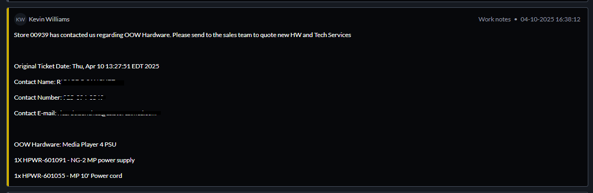

Sales
A basic guide on sales requests
Sales requests are received through an Atos ticket, once it is
assigned to VDR:NCR-DMB.
The request for the Sales ticket will be in Atos in the work
notes/comments, and it should look as following:

With this information,
the L2 DMB Support team sends an email to the MCE Team (orders
team, with the support team being in CC, along with the
Backlog Team), and adds additional information and hardware,
if needed.
The information added should be:
-Vermin barriers and any additional hardware requested
in the request, mentioned in the first part of the Sales
request.
-Installation fee, if the customer does not
have coverage on their Break and Fix contract. Its calculated
after all of the hardware has been added, and its inserted
below the OOW Hardware part of the email.
Upon sending,
Atos ticket is closed with the appropriate note.
When
the quote is sent and approved, a SNOW Case will be created,
which will be assigned to the Installation/Deployment team for
tracking and replacement.